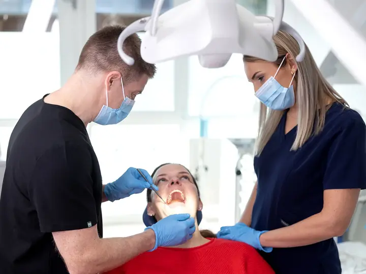
Implantáció
A foghiányok pótlására legalkalmasabb kezelés. Mozgó fogsor rögzítésénél akár a kezelés napján rögzített fogsorral távozhat.
Implantátum + fej: 200 000 Ft/db
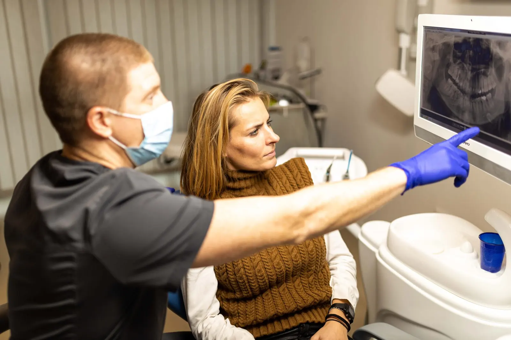
Fájdalommentes kezelések korszerű eszközökkel, barátságos, nyugodt légkörben – a fogkő-eltávolítástól a fogbeültetésig.
Megtartó fogászattól a szájsebészetig: minden kezelés egy helyen, a saját szakorvosaink kezében.

A foghiányok pótlására legalkalmasabb kezelés. Mozgó fogsor rögzítésénél akár a kezelés napján rögzített fogsorral távozhat.
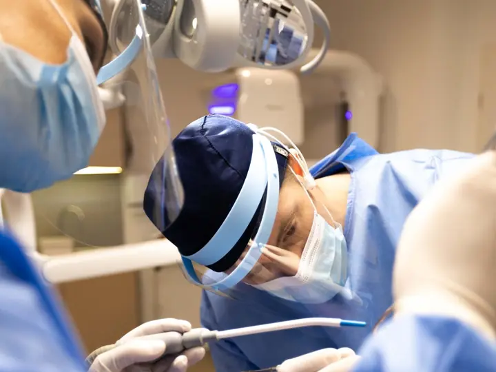
Bölcsességfog-eltávolítás, foggyökerek eltávolítása, fogbeültetés. Modern érzéstelenítéssel még az injekció beadása is észrevétlen marad.
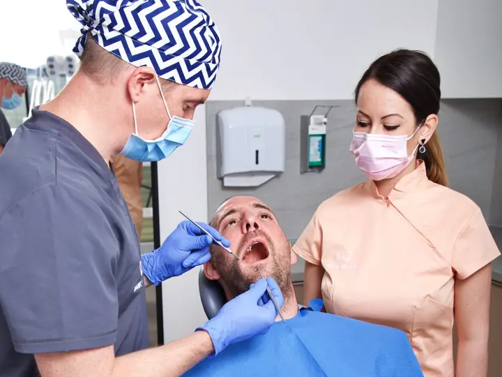
Endodontus szakorvosunk a bonyolult, nehezen kezelhető fogak gyökérkezelésével foglalkozik: az elsődleges cél mindig a fog megtartása.
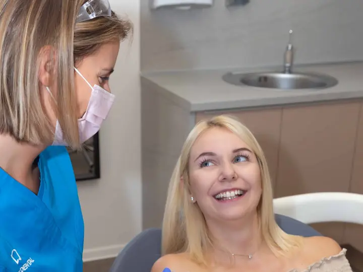
Rendelői és otthoni fogfehérítés, belső fehérítés gyökérkezelt fogra, kerámia héjak és fémmentes, cirkónium koronák.
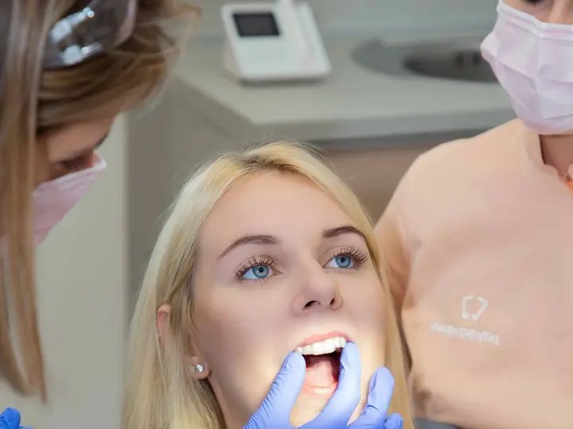
Professzionális fogtisztítás és szűrés, ínybetegségek kezelése és személyre szabott szájhigiéniai tanácsadás.
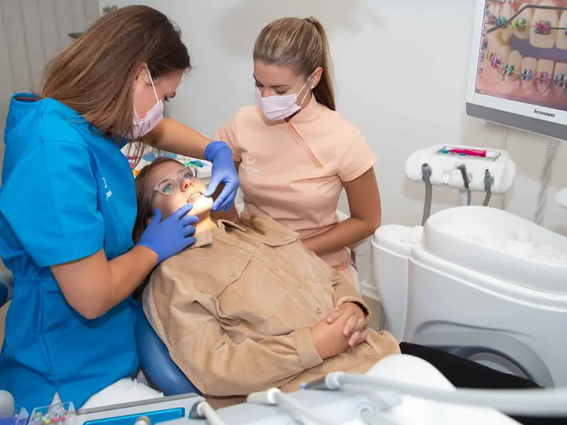
Gyermekeknek és felnőtteknek, két fogszabályozó szakorvossal: rögzített fém és kerámia, Damon-készülék, SPARK láthatatlan fogszabályozó.
Válassza ki a kezelést, húzza el a csúszkát, és mellette látja, mennyi idő és mennyibe kerül.
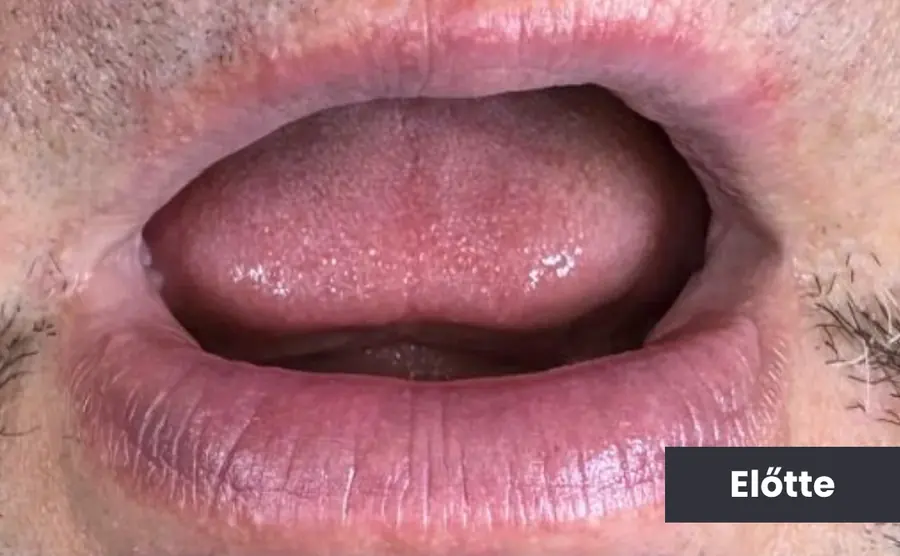
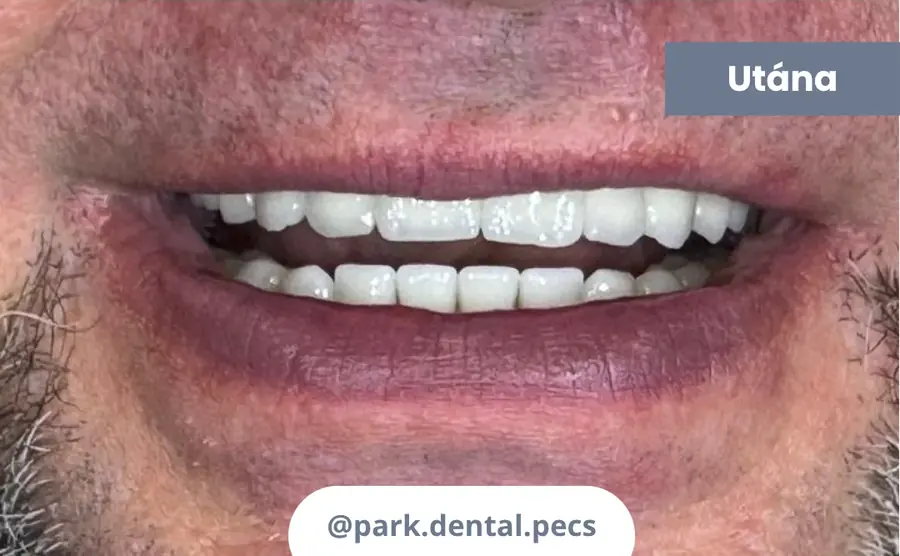
A képek a Park Dental páciensei, a rendelő saját közzétett felvételei.
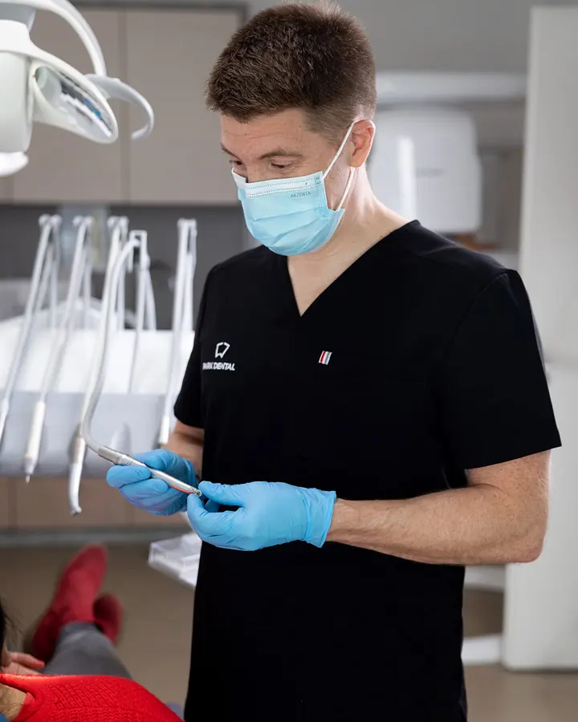
„Többezer sikeresen beültetett implantátum tapasztalata alapján állítom, hogy ez a fajta fogpótlás rendkívül biztonságosan alkalmazható eljárás, mely akár egy életen át kiszolgálja a páciens elvárásait.”
Állapotfelmérés, digitális diagnosztika és az egyéni igényekhez szabott terv.
Modern technológiával, fájdalommentesen, helyi érzéstelenítésben.
Az implantátum beépül a csontba; közben ideiglenes fogpótlás is viselhető.
A korona vagy híd precíz elkészítése és rögzítése az implantátumra.
Tapasztalt szakembereink gondoskodnak arról, hogy minden beavatkozás kíméletes és fájdalommentes legyen. Családias, barátságos hangulat és teljes komfortérzet a várakozás és a kezelés során is.
Csak a legmodernebb anyagok kerülnek felhasználásra, olyan gyártóktól, melyek évtizedek óta vezető szerepet töltenek be a fogászati anyagok piacán.
Mindegyik orvosunk a saját szakterületén dolgozik, így a kezelési terv egy csapat kezében marad.
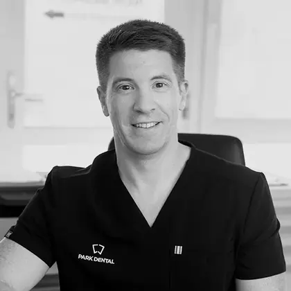
Fogorvos, szájsebész szakorvos
Több mint tizenöt éve dolgozik; fő területe az implantátumok beültetése és az azokra készülő fogpótlás.
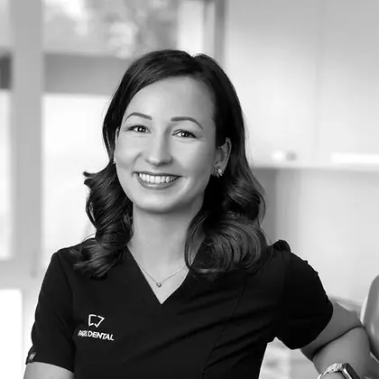
Fogorvos, szájsebész szakorvos
Szájsebészeti szakvizsga 2022-ben; fontos számára a bizalom és a nyugodt, barátságos légkör.
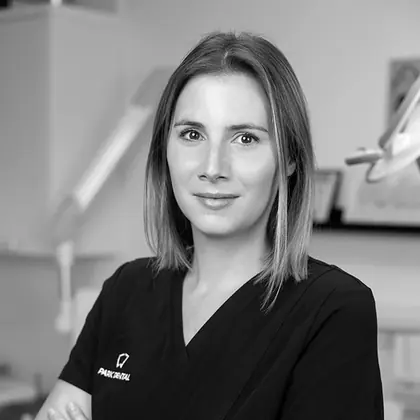
Konzerváló fogászat és fogpótlástan szakorvos
Szakorvos 2019 óta, és ma is részt vesz a jövő fogorvosainak képzésében.
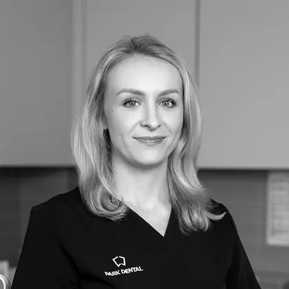
Fogorvos, endodontus szakorvos
A bonyolult anatómiájú fogak gyökérkezelése a szakterülete; a cél mindig a fog megtartása.
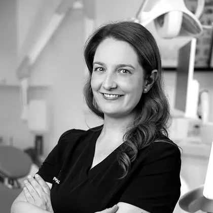
Fogszabályozó és gyermekfogszakorvos
A PTE Gyermek- és Ifjúsági Fogászati Tanszékén is dolgozik, oktat és kutat.
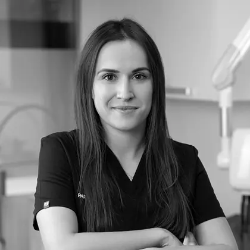
Fogorvos, fogszabályozó szakorvos
Nemzetközi és hazai továbbképzéseken fejleszti tudását; a közös, személyre szabott kezelési terv híve.
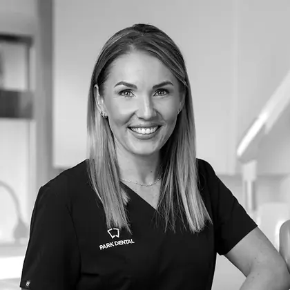
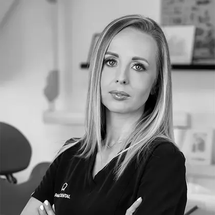
92 Google-vélemény alapján
„Nagyon féltem, de rögtön érezhető volt a nagyon magas szakmai hozzáértés és profizmus.”
„Ritkán megyek ilyen nyugodt érzéssel fogorvoshoz.”
„Precíz, kedves, tanácsokkal látott el.”
„…végig fájdalommentesen zajlott.”
A teljes árlista, kezelési csoportonként. Kombinált kezelések esetén az árak változhatnak.
Fogkő-eltávolításnál nappalis diákigazolvánnyal 10% kedvezmény jár. Fizetés készpénzzel vagy bankkártyával; egészségpénztári számlát kérésre kiállítunk. Áraink tájékoztató jellegűek, az árváltozás jogát fenntartjuk.
Ha nem találja a választ, hívjon minket: 06 20 777 7302.
Az implantációs beavatkozás során helyi érzéstelenítést alkalmazunk, így a beavatkozás alatt nem érez fájdalmat. Az érzéstelenítés elmúlása után enyhe fájdalom vagy kellemetlen érzés előfordulhat, de ez általában jól kezelhető fájdalomcsillapítókkal, és rövid időn belül enyhül.
Az első 1–2 hétben az íny körüli terület gyógyul meg. Az implantátum beépülésére az állcsontba körülbelül 3 hónap szükséges, de ez személyenként eltérhet. Az implantátum végleges stabilizálódása után kezdődhet a fogpótlás elkészítése.
Az implantátumok rendkívül tartósak, és megfelelő ápolás mellett akár élete végéig is szolgálhatják Önt, ha betartja a fogorvosi tanácsokat és rendszeresen ellenőrizteti.
Az implantált fogak ápolása hasonló a természetes fogakéhoz: napi kétszeri fogmosás, fogselyem és szájvizes öblítés, valamint rendszeres fogorvosi kontroll.
Rendelőnkben különösen nagy hangsúlyt fektetünk a fogászati beavatkozások fájdalommentességére. Az általunk használt érzéstelenítési módok lehetőséget adnak arra, hogy még az injekció beadása se járjon kellemetlenséggel.
Akut esetben 24 órán belüli időpontot adunk, ennek díja (akut díj) 10 000 Ft. A kezelés díját az árlista szerint számoljuk.
Rendelőnkben készpénzes és bankkártyás fizetési lehetőség érhető el. Egészségpénztári számlát kérésre kiállítunk.
Igen. Dr. Vajda Katalin fogszabályozó és gyermekfogszakorvos. A fogszabályozást a legtöbb esetben érdemes gyermekkorban megkezdeni, de a kezelés felnőtteknél is látványos eredményeket tud elérni.